×
Click anywhere to close
Backstage — uduX streaming a live show in London.
Groove Platforms is an international music-tech company behind products including uduX, PopRev, StreamNow, Bridgetunes and other digital entertainment experiences. As Technical Digital Marketing Manager, I worked across digital growth, social media, artist campaigns, product testing, advertising technology, analytics, partnerships and creative production — operating at the intersection of music, entertainment, technology and culture, where the challenge was making digital products feel culturally relevant while still building measurable growth.
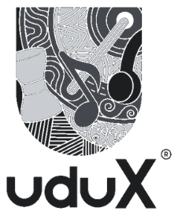
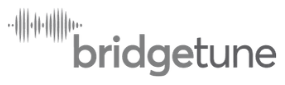
Groove Platforms is the parent company behind these products — this work spanned all four.
Managed and optimized digital marketing strategy for uduX, one of Groove Platforms' music products. Through content strategy, audience engagement, campaign execution and platform optimization, the focus was on content that connected the product to the wider music and entertainment ecosystem, rather than treating uduX as just another music platform.
+45% Instagram engagement · 263 → 480+ LinkedIn followers
organic growth within two months.
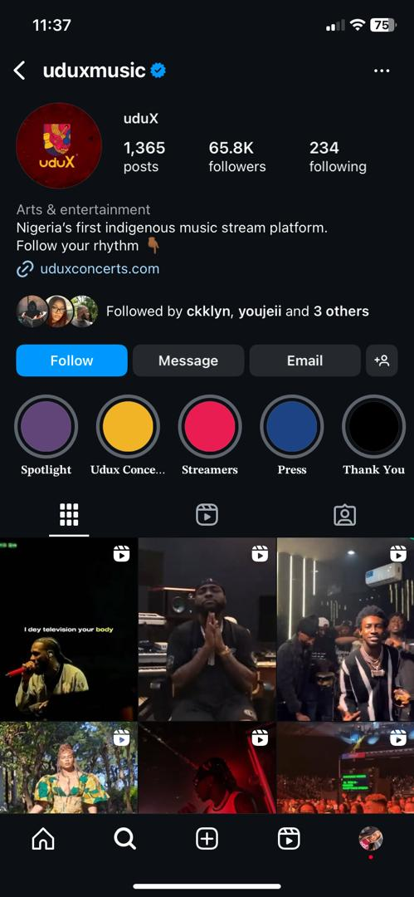
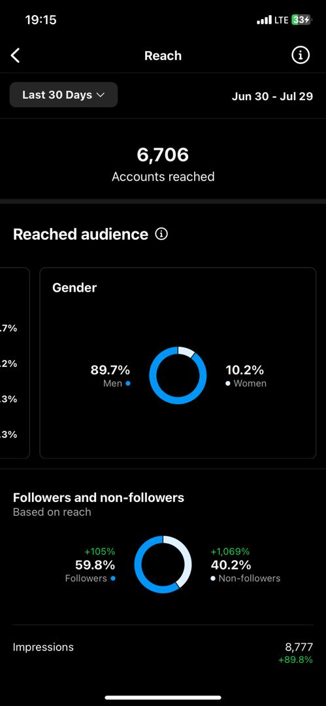
The uduX Instagram — 65.8K followers — and its Reach analytics.
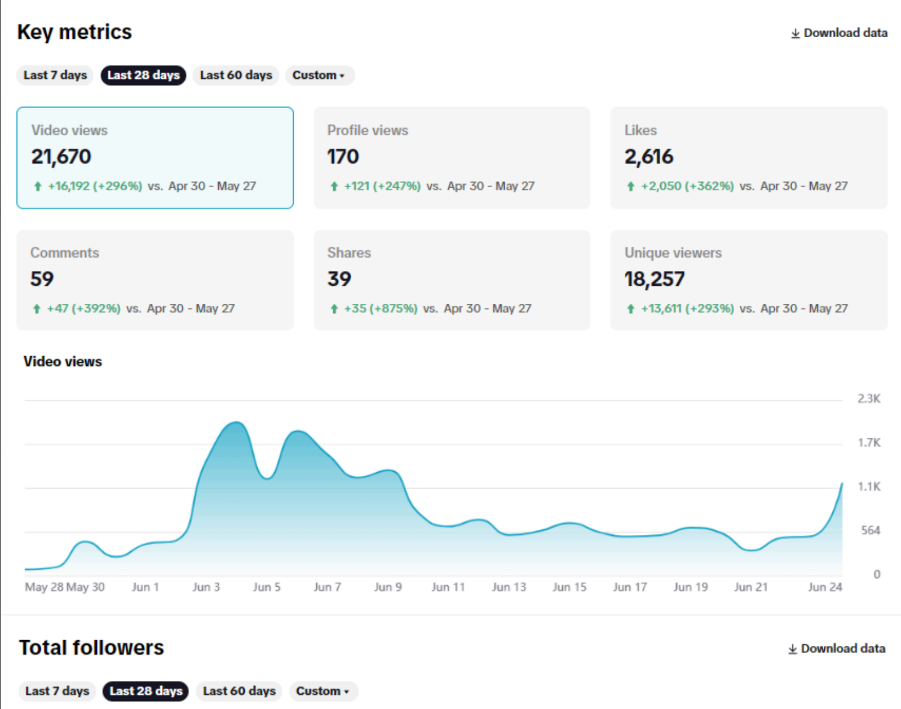
uduX TikTok — 21.6K video views and 18.2K unique viewers over 28 days.
Worked around artists, influencers and cultural personalities to create campaigns capable of generating attention beyond Groove's existing audience — supporting high-impact influencer and artist campaigns involving names such as Davido, Wizkid, Ayra Starr, Speed Darlington and Portable. These campaigns connected Groove's products with audiences already deeply engaged in African music and entertainment culture.
+50% brand visibility from artist-led campaigns.
Ayra Starr for Groove Platforms / uduX.
Davido / uduX
Wizkid / uduX x MTN
Ayra Starr × uduX — YouTube event, with influencer Adesope
One of the standout campaigns was the StreamNow live boxing show featuring Speed Darlington and Portable, combining entertainment, influencer culture, live streaming and social media. The objective was a culturally relevant event that could drive conversation and audience interaction around StreamNow — increasing audience interaction, social conversation, brand visibility and cultural relevance.
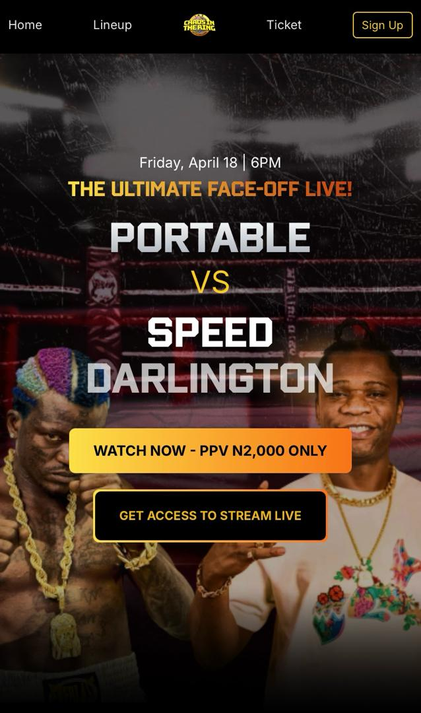
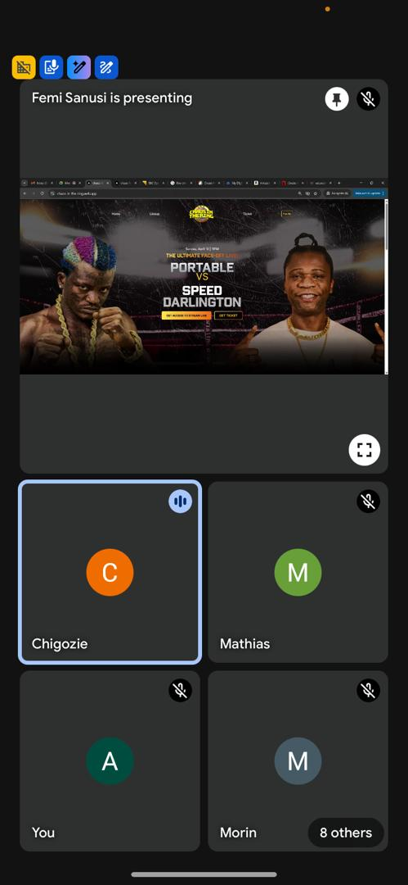
The fight itself, the "Chaos in the Ring" event page, and the livestream being watched live.
Supported partnership activations involving MTN and AfroNation, connecting Groove's products with larger entertainment and consumer audiences. A giveaway campaign under MTN × Bridgetunes was designed to increase audience participation and brand visibility, while AfroNation activations connected Groove to its highly engaged music audience.
+20% livestream engagement
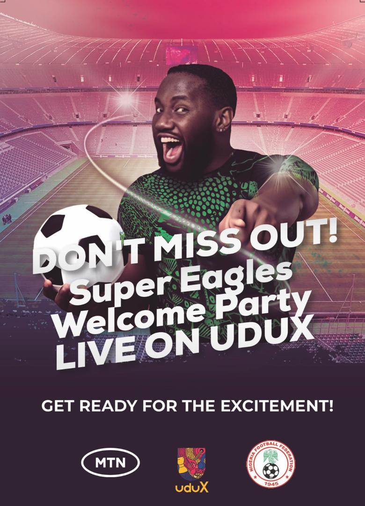
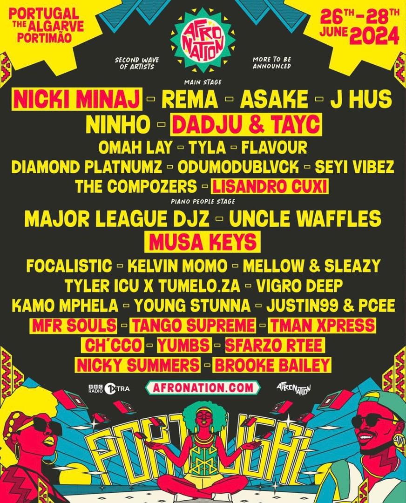
MTN x uduX Super Eagles activations (left, centre) and AfroNation (right).
Because Groove was a technology company, marketing didn't stop at the campaign — I conducted QA testing through TestFlight across products including uduX, Bridgetunes and other Groove digital experiences, testing usability, navigation, interface issues, user experience, functional inconsistencies and content presentation. That feedback fed directly into product functionality and user satisfaction improvements.
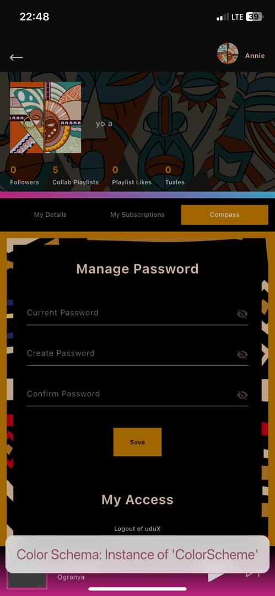
UX issue identified: a debug label — "Color Schema: Instance of 'ColorScheme'" — leaking straight into the live account screen, flagged during testing and passed back to the product team.
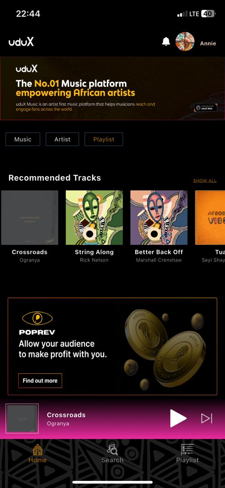
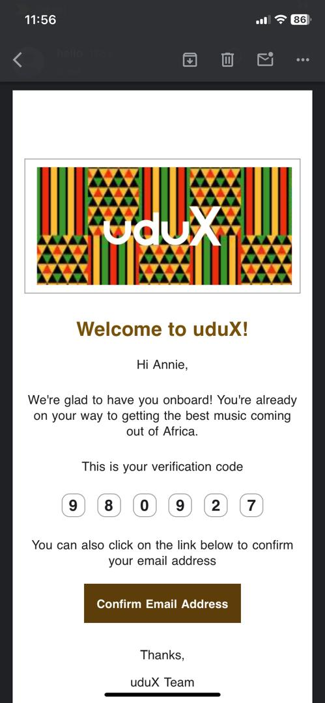
QA capture on the uduX app, the app home feed (with a PopRev promo), the uduX web product, and the onboarding/verification flow.
Implemented tracking technologies across Groove's digital ecosystem, including Google Tag Manager, Facebook Pixel, AdMob and AdSense — enabling more accurate website and app tracking, audience creation, retargeting, PPC optimization, conversion measurement and A/B testing.
+25% conversion rate · +40% advertising ROI
Developed creative concepts, video edits, advertising concepts and campaign messaging built around music audiences and cultural moments, including copy for press releases, advertising campaigns, media buying, social campaigns and promotional campaigns. Used Figma for media strategy presentations and campaign planning.
Press coverage in ThisDay.
My role at Groove Platforms sat at the intersection of music, technology, digital marketing, product, analytics and culture — not just getting people to see the brand, but working across the entire digital ecosystem, from artist campaigns and social growth to product QA, tracking infrastructure, advertising, partnerships and conversion optimization.
Great music marketing isn't just about reaching an audience — it's about understanding the culture they're part of. At Groove Platforms, I combined creative marketing with technical execution — artist partnerships, cultural campaigns and analytics-driven advertising — to grow the company's digital presence and improve the audience experience.